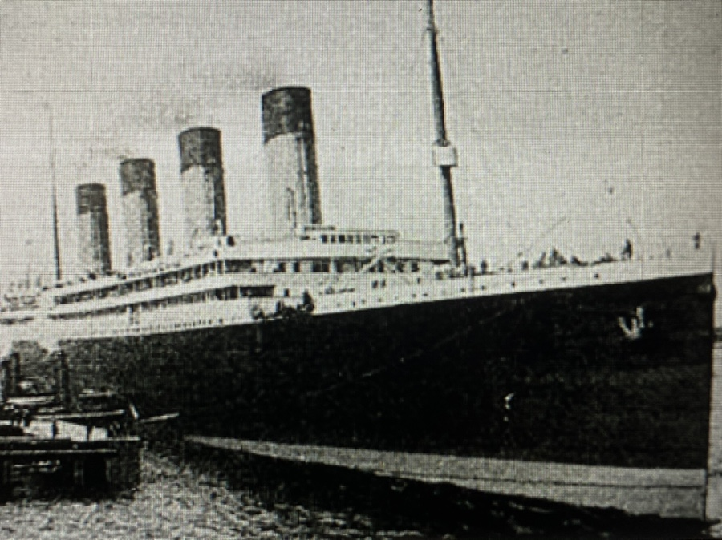

영화 <타이타닉>의 배경

실화를 바탕으로 제작
#타이타닉호
약 20층 규모의 초호화 여객선절대로 가라앉지 않는 배
혁신적인 기술로 제작
#타이타닉호의 침몰
1912년 4월 10일에 첫 출항, 4일만에 미국의 뉴욕으로 항하다가 빙산에 충돌
희생자 1513명, 생존자 711명에 불과
실화를 바탕으로 제작
#타이타닉호
약 20층 규모의 초호화 여객선#타이타닉호의 침몰
1912년 4월 10일에 첫 출항, 4일만에 미국의 뉴욕으로 항하다가 빙산에 충돌
희생자 1513명, 생존자 711명에 불과